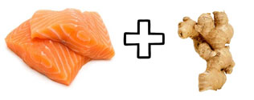
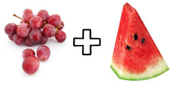

10 food combinations for weigth loss
When you combine foods, it not only make the dishes taste much better
Usually we combine foods for the variety of tastes.
When you combine foods, it not only make the dishes taste much better, but if you do it correctly it can help you lose excess weight.
Combining certain foods will give you more energy, enhance your digestion and help to boost your metabolism to burn fat.
You will learn 10 tasty food combinations that will help you lose weight and shed those extra pounds much quicker.
These food combinations for weight loss will be an added bonus for your attack on excess body fat.
OATMEAL AND BERRIES
This food combo should be on top of your weekly food list. They each have insoluble fiber to help slow down food cravings. Especially oats, it’s one of the best stomach filling foods there is.
For berries, they’re packed with the chemicals called polyphenols that will help in weight loss and can actually stop the build up of fat. By adding this combo to your weekly food plan, it will help you lose weight fast.
YOGURT AND CINNAMON
If you’re struggling with belly fat then it’s time to add a daily dose of vitamin-D fortified yogurt.
Studies have shown that diets that are rich in both calcium and vitamin C can significantly decrease the amount of unwanted fat your body stores and absorbs.
But why should I add cinnamon?
Well, that’s because cinnamon is one of the most POTENT ANTIOXIDANTS that can help to improve your body’s composition and insulin sensitivity.
In other words, it can help you ward off the build-up of stomach fat.
It also makes a perfect combo that you can eat as an on-the-go breakfast or afternoon snack.
HARD-BOILED EGGS AND LEAFY GREENS
Some people like it and some don’t, but you can’t deny the fact that eggs are one of the most efficient fat burning foods. Many studies have proven this fact. Eggs can help with the absorption of carotenoids, which are the pigments that give vegetables their color.
It also helps with fighting weight gain and can protect you from vision loss, improve skin and nails, build muscle to burn fat and many other benefits.
So the next time you’re eating a vegetable salad try to add one or two hard boiled eggs to the mix.
TUNA AND GINGER
This food combo might seem unlikely but they’re powerful together.
Ginger helps to speed up metabolic process and blocks enzymes that promote inflammation.
You can get the powdered spice ginger and sprinkle it over the tuna when making a sandwich.
Tuna contains a type of omega-3 that helps to prevent the storage of fat in your abdominal region. That’s the reason why it’s a perfect combo if you want to help get rid of unwanted fat.
SPINACH AND COCONUT OIL
Coconut oil has tons of health benefits ,one of them being helping with weight loss.
When you drizzle coconut oil on a handful of spinach, you will created a very powerful metabolic booster.
Plus, it also helps with cravings so it’s a perfect choice for in-between snacking. Let’s not forget to mention that it is very low in calories.
LEGUMES AND CORN
Some studies showed that a diet that includes legumes at least once a week is more effective than one with the same amount of calories but without legumes.
So try to eat it at least two times a week or find a way to add it in your diet every other day.
RED GRAPES AND MELON
These two foods contain powerful antioxidants that can help to reduce fat build up.
It’s perfect for a quick midday or afternoon snack. However, don’t go overboard, eat moderately.
Even though these fruits are healthy, the sugar content can add up if you eat too much.
So 1/2 cup of diced melon and red grapes will do for snacking.
CHICKEN AND CAYENNE PEPPER
By sprinkling cayenne pepper on baked skinless chicken breast, it will help fill you up for a longer time-frame and increase your calorie burn by as much as 35%!
But wait, there’s more!
A study revealed that by adding small quantities of pepper to your diet daily will help to curb appetite and boost metabolism which leads to weight loss.
The fat-busting agent is called Capsaicin, which is found in hot peppers.
So it’s time for you to spice up your food.
POTATOES AND PEPPER
As mentioned previously about pepper, when you add it to potatoes it also produces the same effect.
The thing is, potatoes are more satiating than whole grains. You can eat them boiled or roasted but do not add any butter or prepackaged dressings.
Those are very fatty and will just slow down your results. So instead, season them with pepper .
Plus, potatoes are very rich in potassium, which is an added benefit.
Food combination rules to follow
Combine spicy food with protein
By doing this you’re guaranteeing that your calorie burn will increase throughout the day.
Not only does protein have staying power, meaning it will keep your stomach full for a longer period, but it can also help burn more fat.
Combine healthy fats with carbohydrate-rich foods
The truth is we digest carbohydrates very fast, therefore, it won’t keep you full very long.
They give us the energy and fuel we need for our regular workouts.
But when you add healthy fats it digests more slowly which means that you feel fuller much longer and will help to curb your cravings.
Great examples of healthy fats include olive oil, coconut oil and avocado.
Combine water with high-fiber foods
Have you ever tried to eat dry oats without water?
It feels like all the water from your mouth and throat just evaporated!
That’s because foods high in fiber needs plenty of water to properly digest.
When you eat the fiber-rich foods they stay in your digestive track much longer, which means it help to reduce food cravings.
So whenever you’re snacking on some dry whole grain food, make sure that you do so with a tall glass of water.
enjoy!